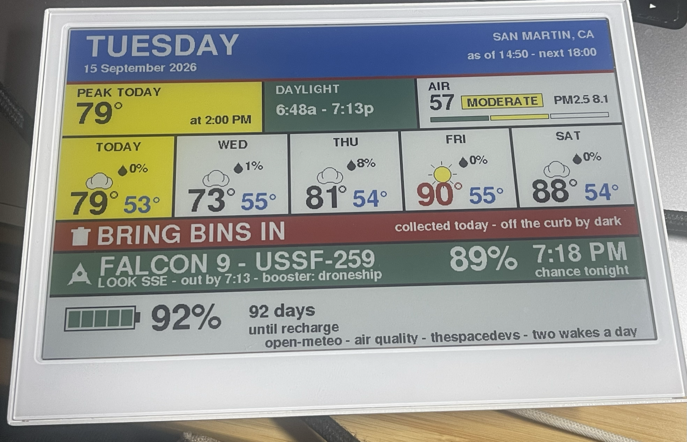

The chance model reaches the panelflashed A launch that scored 10% this morning was on the glass at 89% by evening. Getting there turned up four bugs the panel had been hiding, one of which fired on every flash.
The model, and how it was checked
chance.h touches neither the network nor the clock, which is the whole reason it can be trusted: tools/chance-test.cpp compiles it with a host compiler and asserts every row against what chance-model.py — the model in the plan — returns for identical inputs.
USSF-259 tonight, 18:29, Go 10% ok 18:47 Friday, Go 29% ok the same, 40% cloud 21% ok 04:42 pre-dawn, TBC 48% ok 19:49, half an hour after sunset 95% ok the same, overcast 10% ok 23:50, clear, long after dark 13% ok noon 2% ok all rows match
The first run failed three of those rows. The code was right and the table was stale — I had copied the expected values from the journal's worked examples, which used a sunset four minutes earlier. Expectations now come from running the model itself, so the test compares two implementations rather than an implementation against my typing.
The floor is 5%, not 15%. A launch at ten percent is still a launch happening tonight, and "probably not, but it is up there at 6:29" is what the band is for. Every launch of the day is scored and the best one wins, rather than the first to clear a threshold.
Four bugs, three of them invisible
| What happened | Why |
|---|---|
| the new layout flashed but the panel kept the old one | the content hash covers the data, not the drawing, so a rearranged panel hashes the same and skips the repaint |
| every upload dropped the device into test mode | a CPU reset does not clear the RTC wake-cause register, so the chip still reported the button press that preceded the previous sleep |
| the sun and cloud sat half an icon too low | drawWeatherIcon takes the top and finds its own centre; I passed a centre |
| the launch band vanished entirely | Launch Library throttled the request and a refused fetch erased the band |
{kind=link}

The first two were silent. A layout change that does not repaint looks exactly like a flash that failed, and a device that boots into a synthetic test frame looks the same again — both of which happened repeatedly before either was understood. LAYOUT_VERSION now mixes into the hash, and a button is only believed when esp_reset_reason() says the chip actually woke from sleep; a cold boot clears test mode and repaints, so a fresh flash always shows what that build draws.
Throttled, and the band went with it
ll.thespacedevs.com HTTP 200, parsed 26623 bytes
ll.thespacedevs.com HTTP 429 (), heap 246540 -> 203512
HTTP/2 429
retry-after: 131
{"detail":"Request was throttled. Expected available in 131 seconds."}
A refused request erased the launch. The panel said "no launch tonight" when the truth was "I could not ask" — the worst kind of wrong, because it is indistinguishable from a correct answer. On its own schedule the device wakes twice a day and would never meet this limit; it surfaced because the button was pressed repeatedly and because I was querying the same endpoint from a laptop while testing.
The answer now survives a refusal. The launch is held in RTC memory — name, chance, time, prep, drift, booster — keyed to the day and the lift-off minute, and shown when the network will not talk. It expires by itself once the rocket has gone, so it cannot report a launch that already happened. And because the booster and the orbit do not change between wakes, a launch already asked about is not asked about again: one request per wake instead of two.
The throttle also showed what absent data defaults to. With the detail request refused, the booster read expended for a mission that lands on a droneship — a missing field reading as a definite claim rather than as unknown.
The band, as it now reads
FALCON 9 - USSF-259 89% 7:18 PM LOOK SSE - out by 7:13 - booster: droneship chance tonight
Three booster outcomes rather than two, because a droneship landing is still a recovery — it simply is not a second thing to watch from here. Only an expended booster is no return at all. The line is assembled in the renderer, where it can be measured, and drops its parts in order when it will not fit: the drift hint first, then the look label, then the prep time. The booster is last, because it is the part worth walking outside for.
The drift hint comes from the mission's orbit and the geometry of the two sites. SLC-4E bears 162° from San Martin at 178 miles; a polar or sun-synchronous flight leaves the pad on an azimuth of 180 to 189, which is 18 to 27 degrees right of that line, so it drifts right and recedes down the coast. Low-inclination flights lean the other way, but Launch Library publishes the orbit and not the azimuth, and LEO spans inclinations that go both ways — so that case says only that the track is shallower.
The forecast columns, and the light
Sky and chance of rain read as one fact, so they share a line. The height that frees goes into the temperatures: high from F_MID to F_BIG, low from F_BODY to F_MID, measured at 67 + 7 + 51 px against a 156 px column before it was committed rather than after.
The sources moved to a strip of their own along the bottom edge, one line, and the footer gave up exactly that height so nothing above it moved.
The LED now blinks from the moment a button wakes the device, not from the moment the panel moves. Wi-Fi and three fetches stand between the press and the first pixel, and without it the thing looks ignored for the best part of ten seconds. A press that finds nothing new to draw gets two deliberate flashes instead of silence: heard, worked, nothing changed. Every path to sleep puts the light out.
Still ahead
- The quote of the day, the water-filter badge and the permanent band are mockup and plan; the firmware still hides the band when no launch qualifies.
- The firmware calls Launch Library v2.2.0, which is deprecated. It answers today. When it stops, the band will disappear with no other symptom — the same failure the cache now covers for a throttle.
Assets
journal-assets/2026-09-15_chance-in-firmware/
- panel-icon-low.png — the photograph that found the icon bug
- chance.h — the curves, free of network and clock
- chance-test.cpp — the host test
- chance-test.txt — its output
- session-429.log — the throttled wake
- session-testmode.log — the flash that woke into test mode
- fetch.h — scoring, the cache, the booster
- render.h — the band, the columns, the source strip
{kind=link}
{kind=link}
{kind=link}
{kind=link}
{kind=link}
{kind=link}
{kind=link}
{kind=link}
{kind=link}
{kind=link}
{kind=link}
{kind=link}
{kind=link}
{kind=link}
{kind=link}
{kind=link}
{kind=link}
{kind=link}
{kind=link}
{kind=link}
{kind=link}
{kind=link}
{kind=link}
{kind=link}